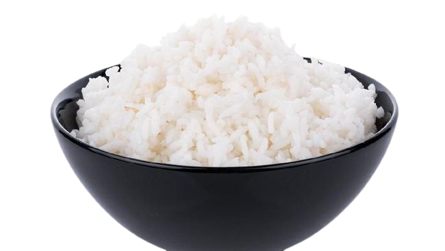

Komponen Utama
pada program diet ,
makanan adalah salah satu kunci keberhasilan dalam menjalani diet
itu sendiri.
Ada beberapa contoh makanan yang bergizi tinggi
serta rendah lemak.
nasi putih
Dalam satu piring nasi putih yang dimasak, setidaknya terkandung sekitar 204 kalori. Mengejutkan, ternyata jumlah kalori nasi putih masih lebih rendah dibanding satu gelas es buah. Satu piring nasi putih mengandung 2 persen lemak, 89 persen karbohidrat, serta 9 persen protein.3
Namun Jangan Khawatir
Banyak makanan yang mengandung karbohidrat sebagai pengganti nasi yang tentunya lebih rendah kalori
4 Makanan Sumber Karbohidrat Pengganti Nasi
Nasi Merah
sumber karbohidrat mengandung 110,9 kalori/ 100gram
Jagung Rebus
sumber karbohidrat mengandung 35 kalori/ 100gram
Ubi Rebus
mengandung 37gram karbohidrat dan 115 kalori/ 150gram
Kentang Rebus
menganung 91% karbohidrat dan 87 kalori / 100gram